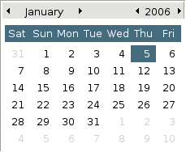
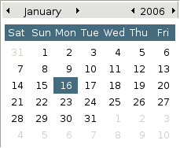

Class GTK2.Calendar
- Description
A calendar widget.
GTK2.Calendar();GTK2.Calendar()->select_day( 16 );Properties: int day int month int no-month-change int show-day-names int show-heading int show-week-numbers int year
Signals: day_selected
day_selected_double_click
month_changed
next_month
next_year
prev_month
prev_year
- Inherit Widget
inherit GTK2.Widget : Widget
- Method create
GTK2.Calendar GTK2.Calendar(mapping|voidprops)- Description
Create a new calendar widget